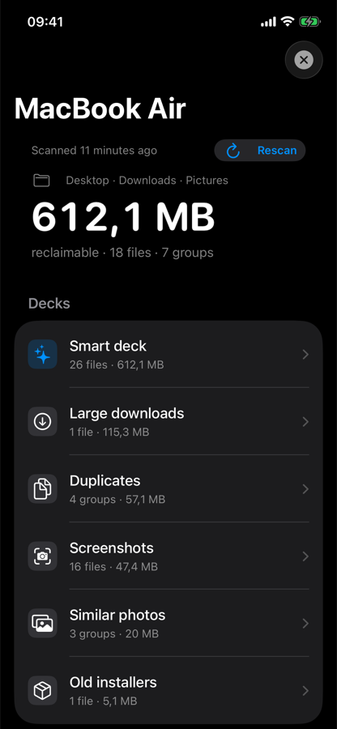
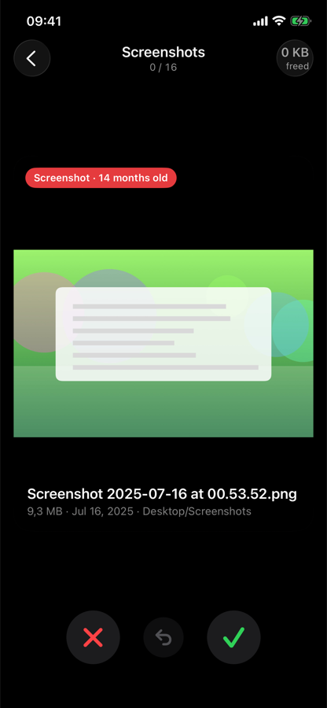
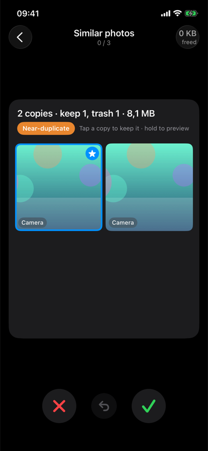
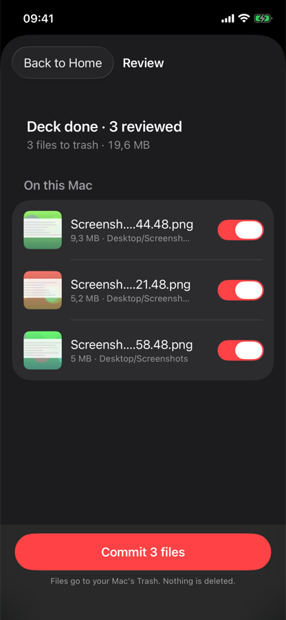

Capturas antiguas, fotos duplicadas, descargas olvidadas. DeckSweep las encuentra en tu Mac y te las reparte en el iPhone como una baraja: desliza a la derecha para conservar, a la izquierda para tirar. Los archivos van a la Papelera, nunca a otro sitio.


Cuatro pasos. El Mac busca, el teléfono decide, la Papelera hace el resto.
Un ayudante en la barra de menús revisa Escritorio, Descargas, Imágenes, Documentos y Películas (tú eliges las carpetas) y ordena lo que encuentra.
Escanea el código QR de ese menú con la app del iPhone. Teléfono y Mac hablan directamente por tu Wi‑Fi, cifrado. Sin cuenta, sin nube.
Derecha conserva, izquierda tira, abajo lo decides luego. Toca para ver a tamaño completo. Los duplicados salen con todas las copias lado a lado.
Una lista muestra exactamente qué se moverá, con un interruptor por si cambias de idea. Luego los archivos van a la Papelera. Deshacer funciona incluso después.
Un número para todo el Mac y luego barajas por tipo: capturas, duplicados, fotos similares, descargas grandes, instaladores antiguos. Cada una muestra cuántos archivos, cuánto espacio y hasta dónde has llegado.
Cada tarjeta dice por qué está ahí — «Captura · hace 14 meses» — con nombre, tamaño y carpeta. Desliza con el pulgar o usa los botones; agita para deshacer.

Las copias exactas y las ráfagas casi idénticas llegan como una sola tarjeta con todas las copias visibles. La que se queda está marcada; toca otra para conservar esa.

Antes de que pase nada tienes la lista completa con un interruptor por archivo. Aplicar los envía a la Papelera del Mac y te dice exactamente qué se movió y qué se dejó en su sitio.
Borrar archivos ajenos es una responsabilidad. Estas son las reglas que el ayudante del Mac impone, no sugerencias.
Nunca archivos del sistema, nunca datos de otras apps, nunca tu fototeca, nunca nada que no hayas señalado.
Todo archivo va a la Papelera. Vaciarla es un paso aparte que confirmas en el Mac, solo en los minutos siguientes a aplicar.
El teléfono recibe miniaturas; el Mac recibe decisiones. Sin cuenta, sin analíticas, sin código de terceros en ninguna de las dos apps. Política de privacidad.
Lo que haya cambiado después del análisis se omite y se avisa, así un archivo que acabas de editar no puede irse por una decisión antigua.
Dos apps, dos minutos.
El ayudante para Mac es gratis. La app de iPhone es gratis para probar, y luego un solo pago.
DeckSweep Unlimited: sin límite de archivos, todos los Mac que vincules, En familia. Sin suscripción.
Tus primeros 50 archivos son gratis. Se compra dentro de la app con tu ID de Apple.
Respuestas cortas; más en la página de soporte.
Los dos en la misma Wi‑Fi, ✦ en la barra de menús del Mac, y Red local permitida para DeckSweep en Ajustes de iOS.
A la Papelera de tu Mac. Finder → Papelera, o Mostrar la Papelera en el menú. Nada se borra hasta que vacíes la Papelera tú mismo.
Agita el teléfono para el último deslizamiento; usa la lista de revisión antes de aplicar; después de aplicar, el menú del Mac devuelve los archivos mientras sigan en la Papelera.
No. Nunca entra en fototecas, apps ni otros paquetes.
macOS 14 Sonoma o posterior, Apple silicon o Intel. iPhone con iOS 17 o posterior.